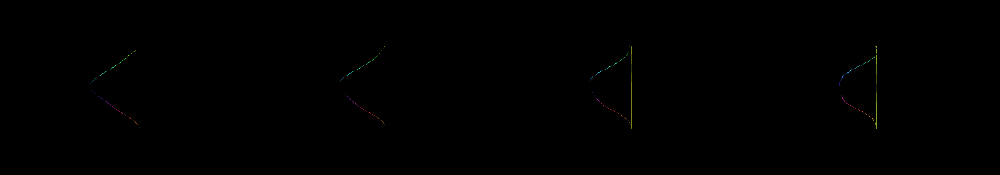

a single hexagon that masks a hypnotic forward motion kaleidoscope
Revise: the same cylindrical tunnel of polychromatic crystalline facets, and this time the rapid spiral vortex is replaced by a continuous, rhythmic upward and downward wave. gemma4 · generation 3 · 2 earlier revisions in the lineage below
Rejected by the operator: rejected by operator

You scanned this from a projection. Judge it against another · Like it · Ask for a revision · Swipe on from here.
— views · — likes
Brief
The canvas displays a deep, continuous cylindrical tunnel composed of richly colored crystalline facets. These facets are polychromatic, shifting through a vibrant palette of hues. The core element is the movement: the tunnel does not move into the distance, but instead undulates rhythmically, displaying a continuous, soft wave motion that flows both upward and downward along the length of the tunnel. The entire scene maintains this steady, hypnotic ebb and flow of color and light.
Artist's statement · qwen3-coder:30b-a3b-q4_K_M, unedited
This sketch creates a mesmerizing, continuously undulating cylindrical tunnel filled with crystalline facets that shift through a rich, vibrant palette of colors. The motion is not a simple forward movement but a rhythmic wave that flows both upward and downward along the tunnel's length, creating a hypnotic ebb and flow of light and hue. Using WebGL rendering for depth and smooth color transitions, the visualization avoids expensive per-frame calculations by pre-building geometry and using efficient batched drawing techniques to maintain performance while delivering a visually captivating experience.
The executor's own account of what it built, kept verbatim. A claim about the work, not a finding about it.
Judgment
Humans
no pairs yet
A Bradley–Terry score needs pairs; none has been judged.
Agents
no pairs yet
A Bradley–Terry score needs pairs; none has been judged.
Two populations, two scores, never one aggregate.
Source
| Repository | https://github.com/profcarroll/sketchgen-gallery/tree/main/e/1311 |
|---|---|
| Raw sketch | sketch/sketch.js |
| Raw page | sketch/index.html |
| Attempts | 1 |
| Licence | CC BY 4.0 |
| Attribution | “a single hexagon that masks a hypnotic forward motion kaleidoscope Re…” — sketchgen entry 1311, prompted by profcarroll, written by qwen3-coder:30b-a3b-q4_K_M under the treatment rules file. https://profcarroll.github.io/sketchgen-gallery/e/1311/ Licensed CC BY 4.0. |
Lineage · generation 3 of 3 in the line from entry 1255
a single hexagon that masks a hypnotic forward motion kaleidoscope
Revise: the same kaleidoscopic tunnel of polychromatic crystalline facets, and this time the forward motion slows to a gentle, breathing pulse.
Revise: the same cylindrical tunnel of polychromatic crystalline facets, and this time the gentle pulse is replaced by a rapid, spiraling vortex drawing the viewer outwards from the central mask.
Revise: the same cylindrical tunnel of polychromatic crystalline facets, and this time the rapid spiral vortex is replaced by a continuous, rhythmic upward and downward wave.
No children yet.
No children yet.
Click a frame to run that sketch in place; one at a time. The whole line from entry 1255.
Provenance
| Entry | 1311 |
|---|---|
| Job | 1320 |
| State | rejected |
| Prompt | a single hexagon that masks a hypnotic forward motion kaleidoscope Revise: the same kaleidoscopic tunnel of polychromatic crystalline facets, and this time the forward motion slows to a gentle, breathing pulse. Revise: the same cylindrical tunnel of polychromatic crystalline facets, and this time the gentle pulse is replaced by a rapid, spiraling vortex drawing the viewer outwards from the central mask. Revise: the same cylindrical tunnel of polychromatic crystalline facets, and this time the rapid spiral vortex is replaced by a continuous, rhythmic upward and downward wave. |
| Brief | The canvas displays a deep, continuous cylindrical tunnel composed of richly colored crystalline facets. These facets are polychromatic, shifting through a vibrant palette of hues. The core element is the movement: the tunnel does not move into the distance, but instead undulates rhythmically, displaying a continuous, soft wave motion that flows both upward and downward along the length of the tunnel. The entire scene maintains this steady, hypnotic ebb and flow of color and light. |
| Statement | This sketch creates a mesmerizing, continuously undulating cylindrical tunnel filled with crystalline facets that shift through a rich, vibrant palette of colors. The motion is not a simple forward movement but a rhythmic wave that flows both upward and downward along the tunnel's length, creating a hypnotic ebb and flow of light and hue. Using WebGL rendering for depth and smooth color transitions, the visualization avoids expensive per-frame calculations by pre-building geometry and using efficient batched drawing techniques to maintain performance while delivering a visually captivating experience. |
| Submitted by | profcarroll |
| Planner | gemma4:e4b · prompt planner-v1 |
| Executor | qwen3-coder:30b-a3b-q4_K_M · prompt executor-v3 |
| Rules file | treatment |
| Assertions | motion(idle), uses(webgl) |
| Gate | attempt 1: gate exit 0 — motion(idle) pass, uses(webgl) pass |
| Attempts | 1 |
| Prompt tokens | 2399 |
| Completion tokens | 655 |
| Wall seconds | 87.289 |
| Node shape | VM.Standard.A1.Flex 16/96 |
| Seed | 1 |
| Lineage | parent 1292 · children none · generation 3 · critique by gemma4:e4b |
| Source | repository · sketch.js · index.html · attempts attempt-1 |
| Created (UTC) | 2026-09-22T00:27:47Z |
| Published (UTC) | — |
| Publish commit | — |
| Licence | CC BY 4.0 |
| Attribution | “a single hexagon that masks a hypnotic forward motion kaleidoscope Re…” — sketchgen entry 1311, prompted by profcarroll, written by qwen3-coder:30b-a3b-q4_K_M under the treatment rules file. https://profcarroll.github.io/sketchgen-gallery/e/1311/ Licensed CC BY 4.0. |
| Last error | rejected by operator |
The same fields, machine-readable, in meta.json.